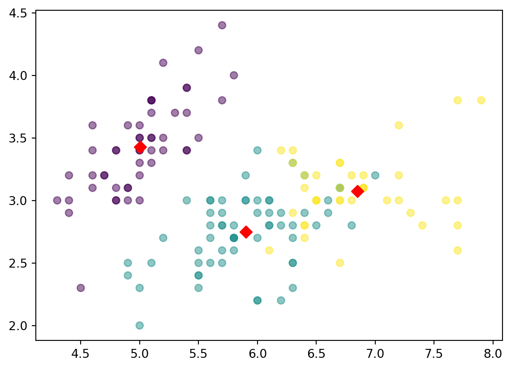

Machine learning provides powerful techniques for uncovering patterns and structures within data. Clustering is an unsupervised learning, that is essential for grouping simlar data points. It has a lot of applications in many fields like image analysis, market segmentation, pattern recognition, social network analysis, etc., Many industries like airlines and healthcare use clustering.
This is a kind of unsupervised learning, that do not need labeled data, which is one of the biggest advantages over supervised learning like Classification. In this blog, we will cover the following topics:
Clustering is the process of grouping data points into clusters, where the data in a cluster are similar to each other. This is helpful in identifying patterns, compress large datasets and detect anomalies. In the Exploratory Data Analysis phase, Clustering is often used to discover new information and patterns in the data as clustering uses unlabeled dataset.
Clustering is a broad task encompassing diverse algorithms with distinct approaches to identify and define clusters within data efficiently. These algorithms vary in their interpretations of clusters and methodologies for their identification.
Hierarchical clustering, also known as connectivity-based clustering, organizes data points into a tree-like hierarchy. This measures similarity between clusters based on connectivity. There are two main types: Agglomerative (bottom-up) and Divisive (top-down).
Agglomerative: Starts with individual data points as clusters and progressively merges them.
Divisive: Begins with one cluster containing all data points and iteratively splits them.
Centroids-based Clustering (Partitioning methods)
Centroids-based clustering divides data into distinct partitions or clusters. Each cluster is represented by a centroid. The commonly used partitioning method is K-Means Clustering.
K-Means: Minimizes variance within clusters by iteratively updating cluster centroids.
Distribution-based Clustering
Distribution-based clustering assumes data points are generated from underlying probability distributions. The common distribution based method is Gaussian Mixture Models (GMM).
GMM: Represents data as a mixture of Gaussian distributions, accommodating complex cluster shapes.
Density-based Clustering (Model-based methods)
Desity-based clustering forms clusters based on the density of data points. This doesn’t require specifying the number of clusters beforehand. The commonly used method is DBSCAN (Density-Based Spatial Clustering of Applications with Noise).
DBSCAN: Assigns data points to clusters based on their density and handles outliers as noise.
Fuzzy Clustering:
Fuzzy clustering allows data points to belong to multiple clusters with varying degrees of membership. Each point has a membership value for each cluster.
Fuzzy C-Means: Generalizes K-Means to assign membership values instead of strict assignments.
Constraint-based (Supervised Clustering):
Constraint-based clustering incorporates predefined constraints during the clustering process. It ensures that certain pairs of points are either in the same or different clusters. It is useful in scenarios where prior knowledge or constraints on the relationships between data points are available.
Essential Clustering Algorithms
K-Means
Ever wonder how computers make sense of heaps of data? Picture this: your data is like a bustling marketplace, and K-means clustering is the savvy guide helping to categorize similar items together while keeping distinct groups apart.
In simpler terms, clustering is a powerful tool in data science that helps find natural groups within a dataset. These groups, or clusters, share similarities among themselves but differ from other clusters. It’s like putting similar fruits together in a grocery store—you wouldn’t mix bananas with tomatoes, right?
Among various clustering methods, K-means takes the spotlight. It’s like the seasoned navigator guiding the exploration of data landscapes. This method is fantastic at revealing patterns and structures in the data. Think of clustering as a way to organize your data market. Hierarchical clustering, a method that groups things step by step, was the pioneer in this field. Over time, cluster analysis became a sophisticated tool in statistics and an unsupervised learning approach in machine learning.
In the world of statistics, clustering methods fall into two main categories: those based on probability models and those without specific assumptions. Probability model-based approaches assume that data points come from a mixture probability model, a bit like saying different items in the market belong to various categories.
In data science, partitional methods operate on the idea that a dataset can be represented by clear cluster prototypes, each with its specific characteristics. The key is figuring out how different a data point is from these prototypes. The K-means algorithm is a classic example of this approach, widely used and well-established. It works by grouping data points into clusters, helping to reveal patterns in the data. To get a feel for its effectiveness, let’s take a look at the popular “Iris” dataset, a common playground for data scientists using K-means clustering.
# Import necessary librariesfrom sklearn.cluster import KMeansimport matplotlib.pyplot as pltfrom sklearn.datasets import load_irisimport warningswarnings.filterwarnings('ignore')# Load the Iris datasetiris = load_iris()data = iris.data # This is your "points"# Create a KMeans instance with 3 clusters: modelmodel = KMeans(n_clusters=3)# Fit model to datamodel.fit(data)# Determine the cluster labels: labelslabels = model.predict(data)# Extract the columns of data: xs and ysxs = data[:, 0]ys = data[:, 1]# Make a scatter plot of xs and ys, using labels to define the colorsplt.scatter(xs, ys, c=labels, alpha=0.5)# Assign the cluster centers: centroidscentroids = model.cluster_centers_# Assign the columns of centroids: centroids_x, centroids_ycentroids_x = centroids[:, 0]centroids_y = centroids[:, 1]# Make a scatter plot of centroids_x and centroids_yplt.scatter(centroids_x, centroids_y, marker='D', s=50, color='red')plt.show()

DBSCAN
DBSCAN, short for Density-Based Spatial Clustering of Applications with Noise, is an unsupervised clustering algorithm that identifies clusters based on the density of data points. It distinguishes itself by forming clusters from regions with high density, effectively handling noise or areas with low data density.
The algorithm constructs nearest neighbor graphs, enabling the creation of clusters that can take on arbitrary shapes within datasets. This characteristic is in contrast to k-means clustering, which tends to generate clusters with spherical shapes. Notably, DBSCAN is resilient to noise or outliers in the data.
Advantages of DBSCAN: - Flexible Cluster Shapes: DBSCAN can find clusters of various shapes and sizes. - Robust to Outliers: It’s less sensitive to outliers compared to some other clustering algorithms. - No Need to Specify Cluster Count: Unlike some algorithms, you don’t need to specify the number of clusters beforehand.
The code snippet below uses DBSCAN to cluster data points into groups. Each point is assigned to a cluster, and the algorithm handles outliers as noise.
import pandas as pdimport matplotlib.pyplot as pltimport seaborn as snsfrom sklearn.cluster import DBSCAN# Read the datadf = pd.read_csv("https://reneshbedre.github.io/assets/posts/tsne/tsne_scores.csv")# Display the first 2 rows of the datasetprint(df.head(2))# Check the shape of the datasetprint(df.shape)# Extract featuresX = df[['t-SNE-1', 't-SNE-2']]# Perform DBSCAN clusteringdbscan = DBSCAN(eps=5, min_samples=10)df['cluster'] = dbscan.fit_predict(X)# Visualize the clustersplt.figure(figsize=(10, 6))sns.scatterplot(data=df, x='t-SNE-1', y='t-SNE-2', hue='cluster', palette='viridis', legend='full')plt.title('DBSCAN Clustering Visualization')plt.show()